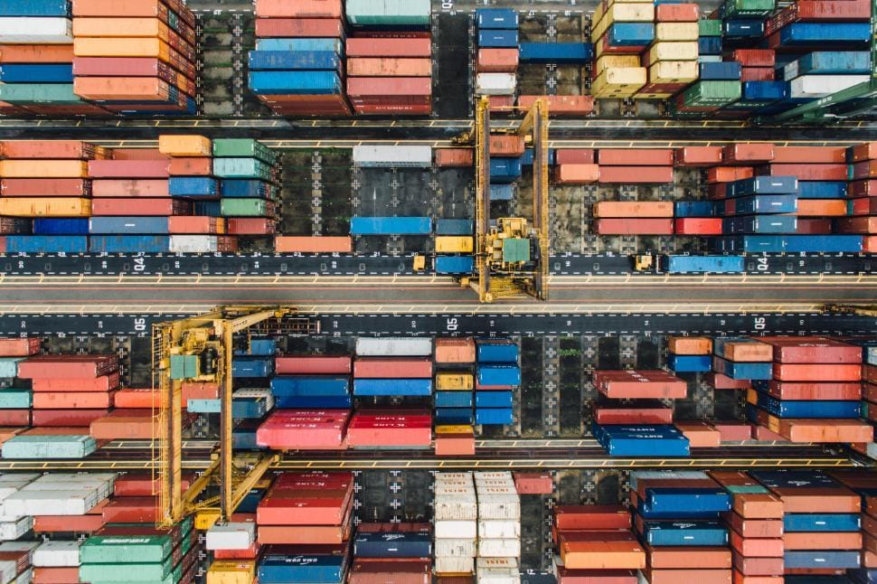

Exporter depuis le Maroc repose sur quatre piliers : une entreprise en règle, un produit correctement classé sur le plan douanier, un dossier documentaire cohérent et une déclaration en douane déposée dans les formes. Tout le reste — transport, assurance, certificats sanitaires, encaissement — vient se greffer sur cette base. Ce guide décrit le parcours dans l'ordre où il se déroule réellement.
1. Avoir une entreprise en règle
Une opération d'exportation commerciale suppose une structure juridique identifiée. Avant toute démarche liée au commerce extérieur, votre entreprise doit disposer des éléments d'identification habituels : inscription au registre du commerce, identifiant fiscal, identifiant commun de l'entreprise (ICE) et compte bancaire professionnel ouvert auprès d'un intermédiaire agréé.
Ces informations ne sont pas de simples formalités administratives. Elles seront reprises telles quelles dans la déclaration en douane, dans les inscriptions aux plateformes du commerce extérieur et dans les documents commerciaux. Une incohérence entre la raison sociale figurant sur la facture et celle enregistrée auprès de l'administration suffit à bloquer un dossier.
Le cas des coopératives et des artisans
Les coopératives, les artisans et les très petites structures peuvent exporter, mais leur situation demande une vérification préalable : selon la forme juridique et la nature de l'activité, certaines inscriptions sectorielles s'ajoutent aux formalités générales. Le point mérite d'être tranché avant de démarcher un acheteur étranger, pas après.
2. Identifier le code SH de votre produit
Le code du Système harmonisé, ou code SH, est la clé de voûte de toute l'opération. Ce classement numérique détermine les droits et taxes applicables, les documents exigés, les contrôles déclenchés à l'exportation comme à l'importation, et l'éligibilité aux préférences tarifaires prévues par les accords commerciaux signés par le Maroc.
Deux produits qui se ressemblent commercialement peuvent relever de positions différentes. Une huile d'argan cosmétique et une huile d'argan alimentaire ne suivent pas le même chemin réglementaire. Un classement approximatif se paie plus tard, souvent au moment du dédouanement dans le pays de destination.
3. Vérifier ce qu'exige le pays de destination
C'est l'étape la plus souvent négligée, et celle qui coûte le plus cher quand elle est oubliée. Les formalités marocaines à la sortie ne disent rien des conditions d'entrée sur le marché visé. Un produit parfaitement conforme au départ de Casablanca peut être refusé à l'arrivée.
Selon le produit et le marché, les points à vérifier concernent :
- les exigences sanitaires ou phytosanitaires du pays importateur ;
- les règles d'étiquetage, de langue et de mentions obligatoires ;
- les normes techniques et les certifications reconnues sur place ;
- les restrictions ou autorisations d'importation propres à la position tarifaire ;
- les règles d'origine à respecter pour bénéficier d'un droit de douane réduit.
Cette vérification se fait auprès des autorités du pays de destination ou de leurs portails officiels. Pour l'Union européenne, la Commission européenne met à disposition des bases publiques qui recensent, pour chaque code produit et chaque pays d'origine, les droits applicables et les formalités exigées.
4. S'inscrire à PortNet et aux services de la douane
Les procédures marocaines du commerce extérieur passent par le guichet unique national PortNet. L'inscription commence par la création d'un espace privé sur la plateforme de souscription. Cet espace permet ensuite de souscrire aux services du guichet unique et à ceux de la douane, de suivre l'état de son inscription au système BADR et de gérer les demandes de modification de ses informations.
Les conditions générales d'abonnement diffèrent selon le profil de l'opérateur — importateur, transitaire, consignataire, opérateur de manutention, banque. Il faut donc identifier son profil avant de constituer le dossier. L'accès aux services fait l'objet d'un forfait ; les tarifs et modalités applicables doivent être vérifiés sur la page officielle des tarifs de PortNet.
Ce sujet mérite un article à lui seul : PortNet Maroc : étapes et formalités pour les importateurs et exportateurs détaille la marche à suivre.
5. Réunir le dossier documentaire
Un dossier export complet combine, selon les cas, des documents commerciaux, douaniers, d'origine, de transport et sanitaires. Le socle commun comprend la facture commerciale, la liste de colisage, le document de transport et la déclaration en douane. S'y ajoutent, selon le produit et le marché, un certificat d'origine, des certificats sanitaires ou phytosanitaires, et les attestations délivrées par les services de contrôle compétents.
La règle qui évite le plus de blocages tient en une phrase : tous les documents doivent dire la même chose. Mêmes quantités, mêmes poids, même description du produit, même valeur, même destinataire. Une divergence entre la facture et la liste de colisage attire immédiatement l'attention lors du contrôle.
Le détail figure dans notre guide dédié : documents nécessaires pour exporter depuis le Maroc.
6. La déclaration en douane
Toute marchandise exportée doit être déclarée. Au Maroc, la déclaration prend la forme de la Déclaration Unique de Marchandises, la DUM, traitée dans le système informatique BADR de l'Administration des Douanes et Impôts Indirects. C'est elle qui assigne un régime douanier à la marchandise et qui déclenche le processus de contrôle.
En pratique, la déclaration est le plus souvent établie et déposée par un transitaire ou un commissionnaire en douane agréé, qui dispose des accès nécessaires et engage sa responsabilité sur les données déclarées. Les conditions dans lesquelles un opérateur peut déclarer lui-même se vérifient auprès de l'ADII.
Après enregistrement, la déclaration est orientée vers un circuit de contrôle. Le dossier peut être admis sur pièces, faire l'objet d'un contrôle documentaire renforcé ou donner lieu à une vérification physique de la marchandise. Un exportateur qui réalise sa première opération, ou dont les données présentent des incohérences, a mécaniquement plus de chances d'être contrôlé.
Votre projet d'importation ou d'exportation nécessite un accompagnement personnalisé ? AFIM Consulting vous aide à structurer votre dossier avant le dépôt.
Demander une consultation7. Incoterm, transport et assurance
L'Incoterm choisi dans le contrat de vente répartit les frais, les risques et les obligations entre vous et votre acheteur. Il indique jusqu'où vous prenez en charge le transport, à quel moment le risque bascule et qui accomplit les formalités douanières de chaque côté. Un Incoterm choisi à la légère transforme une vente rentable en opération à perte.
Le mode de transport se choisit ensuite en fonction du volume, de la valeur, de la nature du produit et du délai accepté par l'acheteur. Le maritime reste la solution la plus économique pour les volumes importants, l'aérien s'impose pour les marchandises périssables ou de forte valeur, le routier garde son intérêt vers l'Europe pour les envois de taille moyenne.
L'assurance transport, enfin, n'est obligatoire que sous certains Incoterms. Elle reste vivement recommandée dans les autres cas : une avarie non couverte sur une première expédition peut mettre fin à une activité export naissante.
8. Encaissement et réglementation des changes
Une exportation ne se termine pas au départ du navire. Le produit de la vente doit revenir au Maroc, dans des délais fixés par la réglementation des changes.
L'Office des Changes indique que l'exportateur dispose d'un délai maximum de 150 jours à compter de la date de l'imputation douanière pour encaisser et rapatrier le produit des exportations réalisées en vente ferme. Ce délai est porté à 180 jours à compter de la même date lorsqu'il s'agit de ventes en consignation à l'étranger de produits périssables. Des règles particulières s'appliquent aux autres régimes de consignation et aux crédits consentis à des clients étrangers : elles se vérifient au cas par cas auprès de l'Office des Changes.
Le règlement doit intervenir dans l'une des devises cotées sur le marché des changes, selon les modalités prévues par la réglementation : virement bancaire en provenance de l'étranger, débit d'un compte étranger en dirhams convertibles ouvert chez un intermédiaire agréé, ou chèque établi à l'ordre de l'exportateur.
Concrètement, votre banque est l'interlocuteur qui vous accompagne sur ce volet. Discutez avec elle du moyen de paiement avant de signer le contrat, pas après l'expédition. La réglementation des changes a par ailleurs été republiée depuis le 1er janvier 2026 sous une nouvelle instruction : notre article IGOC 2026 : ce que les exportateurs marocains doivent vérifier distingue ce qui est réellement nouveau de ce qui, comme le compte en devises, est en réalité reconduit depuis 2024.
9. Checklist avant la première expédition
- Registre du commerce, identifiant fiscal et ICE à jour
- Compte bancaire professionnel ouvert et banque informée du projet export
- Code SH identifié et vérifié
- Exigences du pays de destination confirmées auprès d'une source officielle
- Espace PortNet créé et souscription aux services effectuée
- Transitaire ou commissionnaire en douane identifié
- Contrat ou bon de commande signé, avec Incoterm et devise précisés
- Facture commerciale et liste de colisage cohérentes entre elles
- Certificat d'origine demandé si le marché ou l'accord le justifie
- Certificats sanitaires ou de conformité obtenus si le produit y est soumis
- Solution de transport réservée et assurance arbitrée
- Modalités et délai d'encaissement validés avec la banque
Questions fréquentes
Il n'existe pas d'agrément général unique conditionnant l'exercice de l'activité d'exportation. En revanche, l'entreprise doit être régulièrement constituée et identifiée, et certains produits ou secteurs sont soumis à des inscriptions, agréments ou autorisations spécifiques. La réponse dépend donc du produit : elle se vérifie au cas par cas auprès de l'administration concernée.
Dans la pratique courante, la déclaration est déposée par un transitaire ou un commissionnaire en douane agréé, qui dispose des accès au système déclaratif et engage sa responsabilité. Les conditions dans lesquelles un opérateur peut déclarer directement se vérifient auprès de l'Administration des Douanes et Impôts Indirects.
L'Office des Changes fixe un délai maximum de 150 jours à compter de la date de l'imputation douanière pour encaisser et rapatrier le produit d'une exportation réalisée en vente ferme, et de 180 jours pour les ventes en consignation à l'étranger de produits périssables. Ces délais concernent le rapatriement des fonds au Maroc ; les conditions commerciales négociées avec votre acheteur doivent rester compatibles avec eux, et chaque situation mérite d'être vérifiée auprès de l'Office des Changes.
Les produits alimentaires, les végétaux, les animaux et les produits d'origine animale relèvent d'un contrôle sanitaire ou phytosanitaire à l'exportation. Les produits alimentaires agricoles et maritimes destinés à l'export font par ailleurs l'objet d'un contrôle de conformité aux exigences des marchés visés. Les produits industriels ou artisanaux non alimentaires suivent d'autres règles, propres à leur nature et au marché de destination.
Sources officielles
- Office des Changes — Rapatriement des produits des exportations de biens
- Office des Changes — Exportations de biens
- Office des Changes — Instruction Générale des Opérations de Change 2026 (PDF)
- Office des Changes — Publication de l'Instruction Générale des Opérations de Change 2026
- Administration des Douanes et Impôts Indirects
- PortNet — Inscription des opérateurs économiques
- ONSSA — Contrôle à l'importation et à l'exportation
- Morocco Foodex (EACCE)
Informations vérifiées le : . L'Instruction Générale des Opérations de Change 2026 est entrée en vigueur le 1er janvier 2026 et remplace la version 2024. Les textes et procédures peuvent évoluer après la date de vérification : en cas de doute, consultez directement les pages officielles ci-dessus ou faites-vous accompagner.
Besoin d'un accompagnement sur votre dossier ?
Votre projet d'importation ou d'exportation nécessite un accompagnement personnalisé ? Contactez AFIM Consulting. Nous étudions votre produit, votre marché cible et les démarches réellement applicables à votre situation.